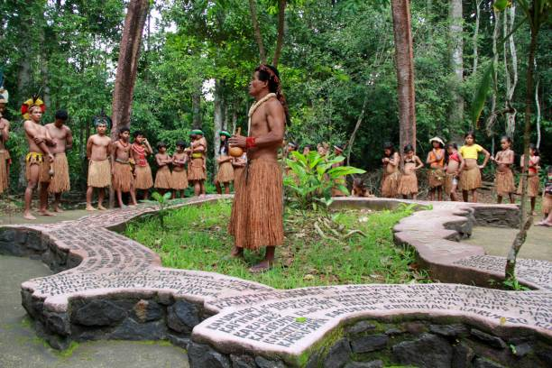
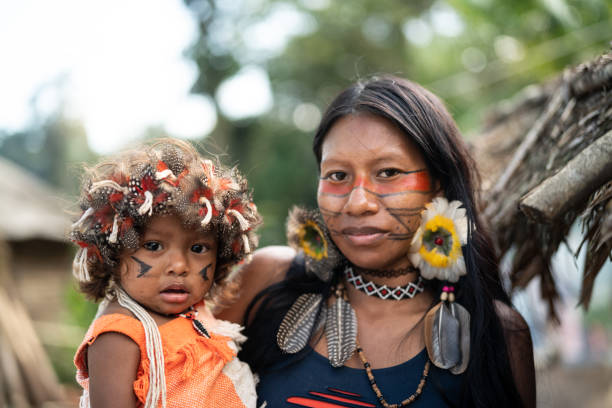
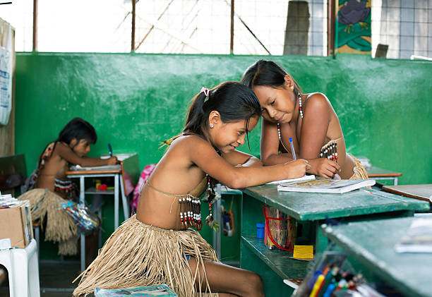

Conheça a Cultura Indígena
Explore filmes, vídeos e músicas que retratam a riquezas dos povos indígenas.
Filmes
Filme Taína a Origem
Vídeos
Este video destaca a música e os rituais indígenas.
Músicas 🔊



Curiosidades
Você sabia que o Brasil possui mais de 300 etnias indígenas, cada uma com sua própria língua e cultura? Descubra mais sobre a diversidade e a história desses povos.
Eventos Culturais
Participe de eventos e celebrações que promovem a cultura indígena. Confira a programação em sua região.
- Festival das Culturas Indígenas - 15 de agosto
- Semana da Consciência Indígena - 19 a 25 de abril